🧵 1. Fasern & Bindematerial
Ohne Schnur kein Überleben. Diese Pflanzen liefern reißfeste Fasern für Seile, Netze und Fallen.
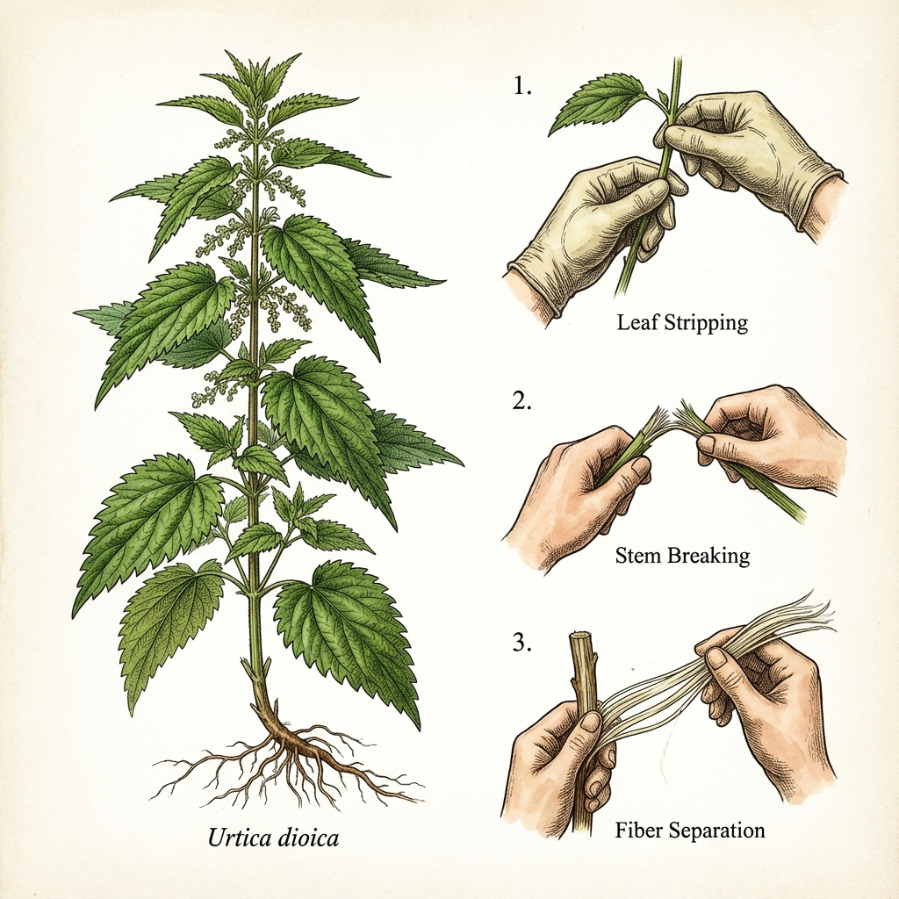
🌿 Brennnessel (Urtica dioica)
Beste Faserpflanze Europas!
- Ernte: Spätsommer/Herbst, lange verholzte Stängel eignen sich am besten.
- Verarbeitung (Deep Dive):
- Blätter abstreifen (Handschuhe oder kräftig von unten nach oben streichen).
- Stängel mit einem runden Stein sanft flach klopfen, bis sie aufsplittern.
- Holzigen Kern herausbrechen ("Brechen"), sodass nur die äußeren Fasern bleiben.
- Fasern trocknen lassen, dann verzwirnen (Drill-Technik).
- Nutzung: Reißfeste Schnüre für Bogenbau, Fischernetze, Fallen oder Nähgarn.
- Bonus: Junge Blätter sind essbar (Spinat) und reich an Eisen!
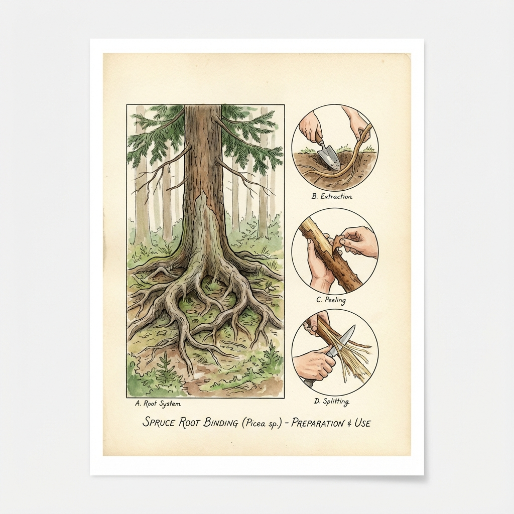
🌲 Fichtenwurzeln
Das "Nähgarn" des Waldes.
- Ernte: Nach flachen Wurzeln im weichen Waldboden graben (oft oberflächlich sichtbar).
- Verarbeitung:
- Über dem Feuer kurz erwärmen, um sie flexibler zu machen und die Rinde zu lösen.
- Rinde abziehen (wichtig gegen Fäulnis).
- Dicke Wurzeln längs spalten (mit dem Messer anritzen und auseinanderziehen).
- Nutzung: Grobe Näharbeiten (z.B. Rindenbehälter zusammennähen), Kanu-Bau, Ausbesserung von Ausrüstung.
🪵 2. Holz & Konstruktion
Baumaterial für Unterstände, Werkzeuge und Waffen.
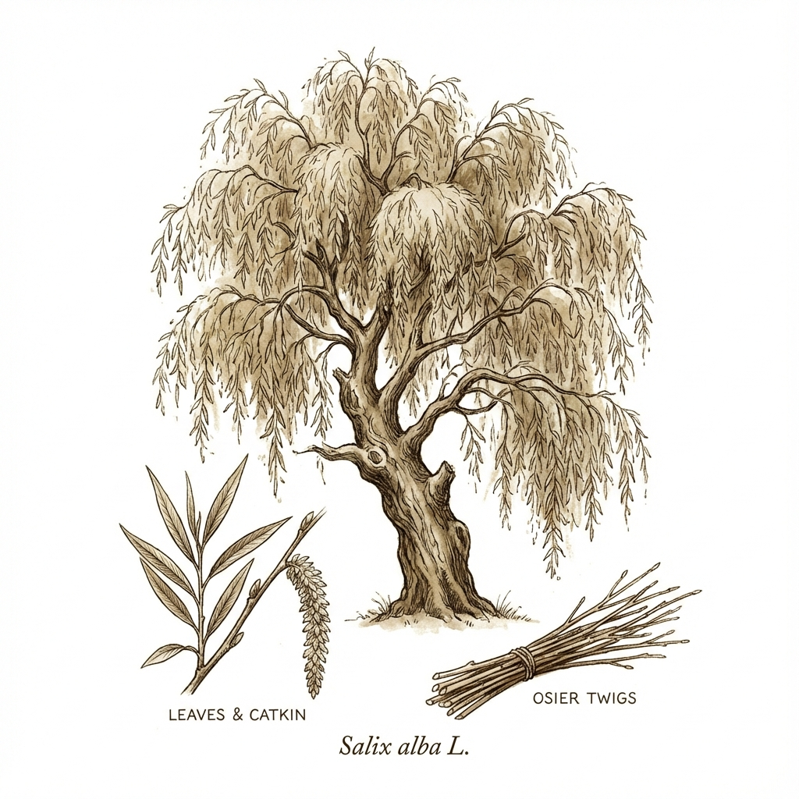
🌳 Weide (Salix)
Die Flexible Apotheke.
- Konstruktion: Extrem biegsam. Perfekt für Flechtwände, Reusen, Körbe und den Rahmen für Schneeschuhe oder Rucksäcke.
- Medizin (Aspirin): Die Rinde (besonders von 2-3 jährigen Zweigen)
enthält Salicin.
- Anwendung: Rinde kauen oder Tee kochen gegen Kopfschmerzen, Fieber und Entzündungen.
- Survival: Aus einem frischen Zweig lässt sich im Frühling leicht eine Pfeife bauen (Signale).
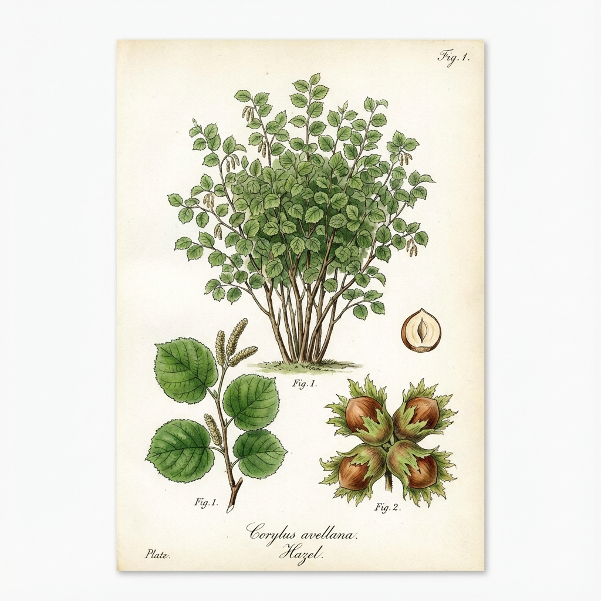
🌰 Haselnuss (Corylus avellana)
Der Stabile Allrounder.
- Holz: Wächst oft kerzengerade. Ideal für:
- Wanderstöcke & Speere (Spitze im Feuer härten).
- Zeltgestänge und stabile Rahmen.
- Pfeilschäfte.
- Nahrung: Die Nüsse sind extrem kalorienreich. Geröstet haltbarer und schmackhafter.
- Haltbarkeit: Das Holz ist zäh und elastisch, bricht nicht spröde.
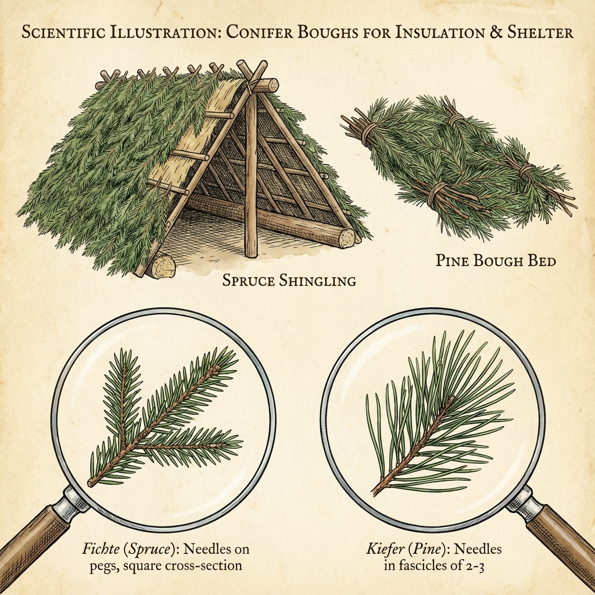
🌲 Fichte/Kiefer (Reisig)
Isolation & Vitamin C.
- Bettbau: Reisig nicht einfach hinlegen, sondern "stecken". Die Zweigenden in den Boden stecken, leicht schräg, dicht an dicht. Wie ein Federkern. Isoliert gegen tödliche Bodenkälte.
- Dach: Dicht geschichtet als Schindeln (unten anfangen, nach oben arbeiten) wasserabweisend.
- Tee: Fichtennadeln (hellgrüne Maitriebe sind am besten, aber alte gehen auch) enthalten viel Vitamin C. Zerkleinern und nicht kochen, nur ziehen lassen.
🔥 3. Feuer & Zunder
Feuer starten bei Nässe? Mit diesem Zunder kein Problem.
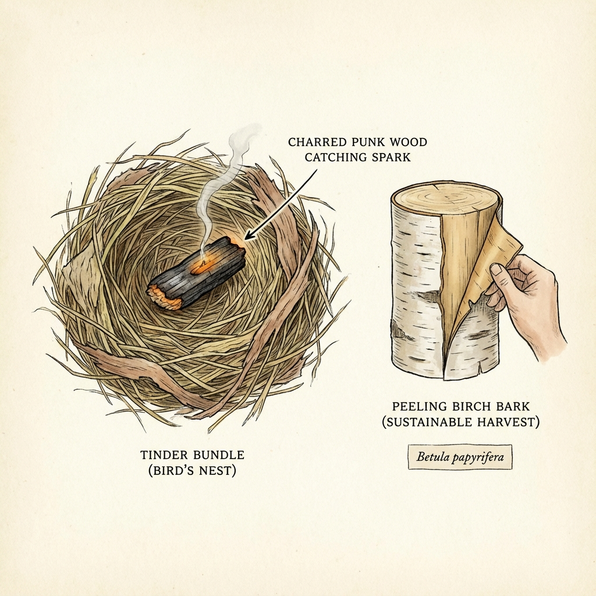
🌳 Birkenrinde
Das weiße Gold des Waldes.
- Feuer: Enthält Betulin (brennt wie Benzin), auch wenn nass. Zupfe die feinsten Papier-Schichten ab.
- Gefäße: Aus größeren Stücken lassen sich dichte Behälter falten (Origami-Technik) oder nähen (mit Fichtenwurzeln).
- Wichtig: Nur loses "Papier" abziehen. Niemals tief in den lebenden Baum schneiden (Ringelung tötet den Baum!). Suche umgefallene, tote Birken - die Rinde verrottet nicht und ist oft noch gut, wenn das Holz schon Modder ist.
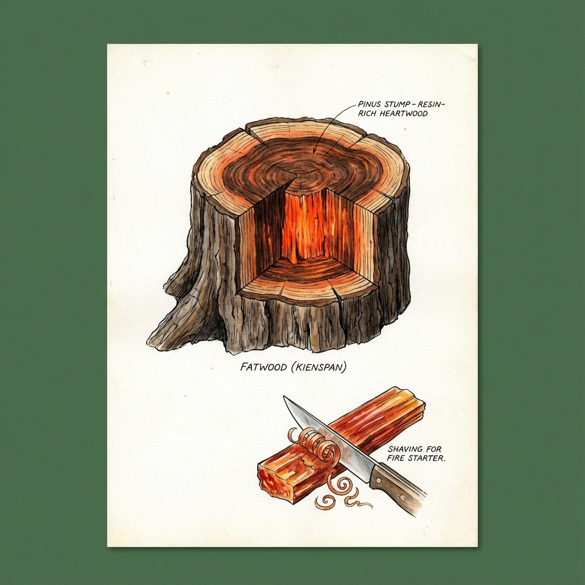
🌲 Kienspan (Fatwood)
Chemischer Anzünder aus der Natur.
- Finden: Suche alte Kiefernstümpfe, die grau und verwittert sind. Tritt dagegen. Wenn es fest ist, hacke hinein. Riecht es stark nach Terpentin und ist das Holz rötlich-glasig? Das ist Goldwert.
- Nutzung:
- Als Zunder: Feine Späne abschaben ("Locken").
- Als Fackel: Ein astgabel-langes Stück brennt 15-20 Minuten wie eine Kerze.
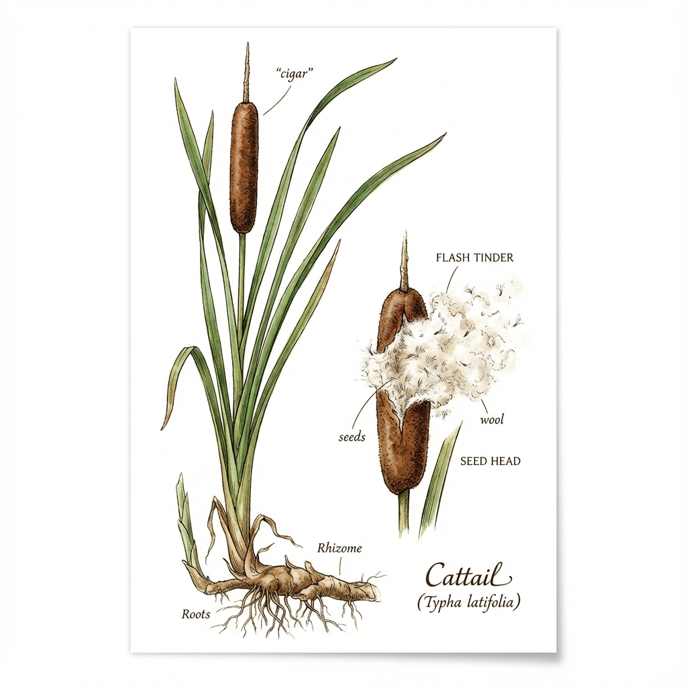
🌾 Rohrkolben (Typha)
Supermarkt des Sumpfes.
- Zunder: Die "Wolle" im Spätjahr fängt jeden Funken, verglimmt aber sofort. Muss in ein Zundernest (z.B. trockenes Gras) gelegt werden, um eine Flamme zu erzeugen.
- Nahrung:
- Frühling: Junge Triebe schmecken wie Gurke/Spargel.
- Winter: Die stärkehaltigen Rhizome (Wurzeln) können gekocht oder zu Mehl verarbeitet werden.
🍯 4. Kleber & Harz
Wer braucht Sekundenkleber? Die Natur hat Besseres.
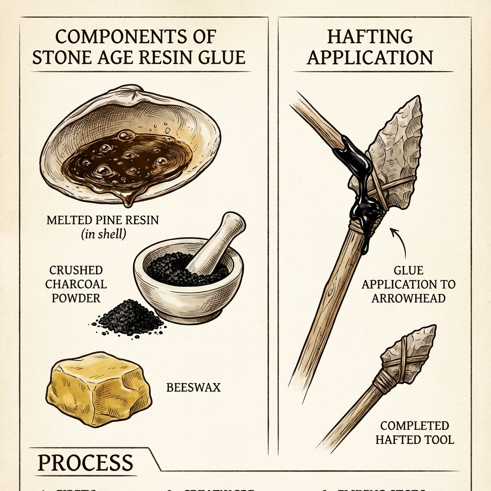
🌲 Harz-Kleber (Steinzeit-Kleber)
Das Epoxidharz der Steinzeit.
- Rezept (Das "Geheimnis"):
- Harz sammeln (Fichte/Kiefer). Erhitzen (Vorsicht, brennbar!).
- Zerstoßene Holzkohle untermischen (macht den Kleber hart und hitzebeständiger). Verhältnis ca. 3:1.
- Etwas Bienenwachs oder Fett dazu (macht ihn weniger spröde, damit er bei Kälte nicht platzt).
- Anwendung: Pfeilspitzen, Messergriffe, Löcher in Schuhen/Planen flicken.
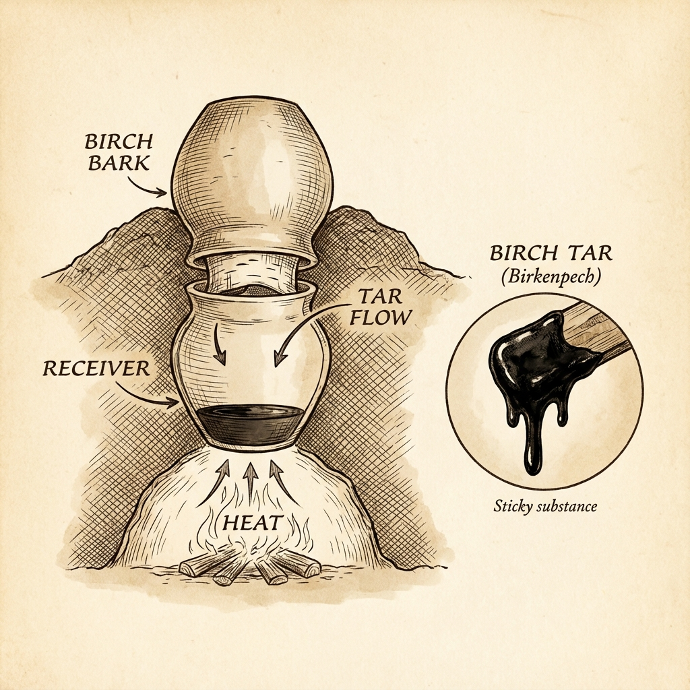
⬛ Birkenpech
Der Hightech-Kleber.
- Prozess: Trockene Destillation (Verschwelen) von Birkenrinde bei ca. 350-400°C unter Luftabschluss.
- Eigenschaften: Bleibt lange formbar wenn warm, wird steinhart wenn kalt. Wasserfest. Antibakteriell.
- Nutzung: Verbindung von Schäftungen, die extremen Belastungen ausgesetzt sind.
🧼 5. Hygiene & Waschen
Sauberkeit verhindert Infektionen.
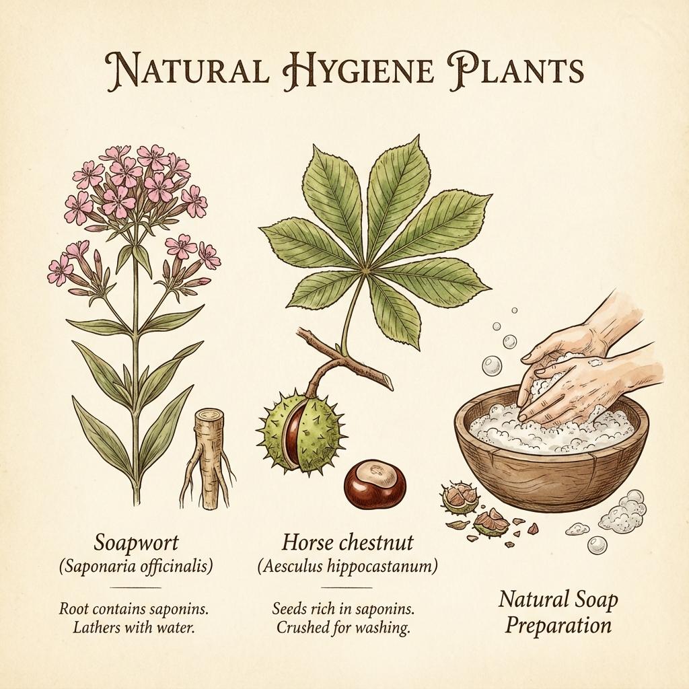
🌸 Gewöhnliches Seifenkraut (Saponaria)
Naturseife vom Wegesrand.
- Erkennung: Rosa/weiße Blüten (Sommer), wächst oft an Ufern/Wegrändern.
- Nutzung:
- Die ganze Pflanze, besonders die Wurzel, enthält Saponine.
- Zerstoßen und mit wenig Wasser kräftig aufschütteln -> ergibt festen Schaum.
- Mildes Waschmittel für Haut, Haare und Kleidung.
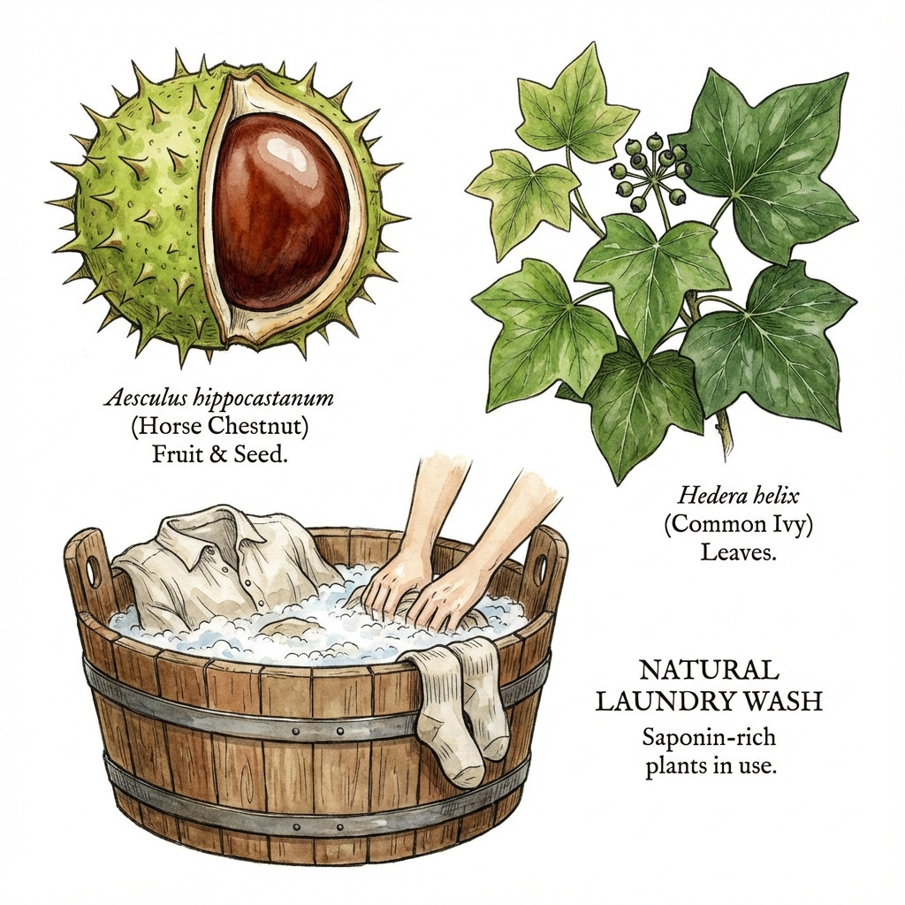
🌰 Rosskastanie / Efeu
Waschmittel für Ausrüstung.
- Kastanien (Der Klassiker):
- 5-6 Kastanien sammeln, vierteln oder zerschlagen.
- In einem Glas Wasser über Nacht stehen lassen (oder mit heißem Wasser übergießen für Eilige).
- Sud abgießen -> Flüssigwaschmittel.
- Efeu: Dunkle, alte Blätter enthalten Saponine. Zerreißen und in einem Strumpf/Säckchen zur Wäsche geben oder auskochen. (Vorsicht: Efeu kann bei manchen Hautkontakt-Allergien auslösen).
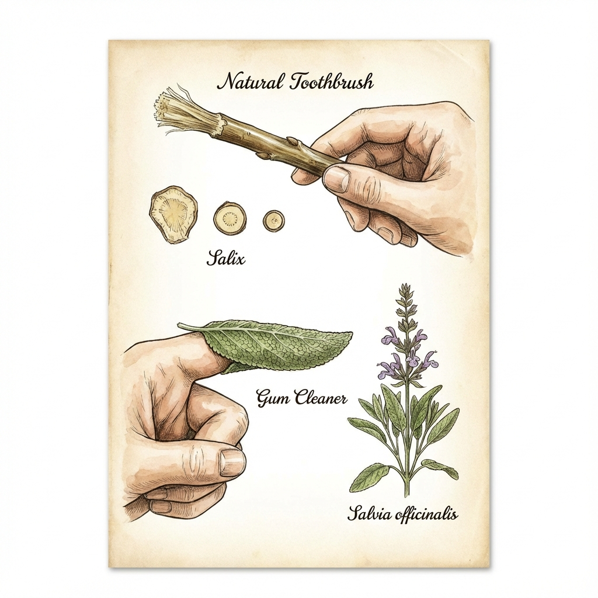
🦷 Weidenzweig / Salbei
Outdoor-Zahnpflege.
- Weiden-Bürste:
- Fingerdicken Zweig (Weide, Hasel, Linde) abschneiden.
- Ein Ende vorsichtig kauen, bis die Fasern sich trennen und wie ein Pinsel werden.
- Damit Zähne putzen (ohne Zahnpasta). Das Kauen regt Speichelfluss an (natürliche Reinigung).
- Salbei-Blatt: Wirkt desinfizierend und zusammenziehend bei Zahnfleischbluten. Einfach Blatt um Finger wickeln und massieren.
🎨 6. Natürliches Färben
Tarnung oder Signalfarbe - alles aus Pflanzen.
Farbtabelle
| Farbe | Pflanze / Teil | Hinweis |
|---|---|---|
| 🟤 Braun | Walnuss (grüne Schalen) | Extrem stark! Färbt Haut wochenlang. Keine Beize nötig. |
| 🟡 Gelb/Orange | Zwiebelschalen | Haltbar. Stoff mit Alaun (oder Essig) vorberhandeln. |
| 🔵 Blau/Lila | Holunderbeeren / Heidelbeeren | Eher fleckig, verblasst schneller. |
| 🟢 Grün | Brennnessel (viel!), Birkenblätter | Schwierig, wird oft eher gelb-grau. Eisenwasser hilft (dunkelt ab). |
| 🔴 Rot | Johanniskraut (Blüten zerreiben), Labkraut-Wurzel | Labkrautwurzeln ergeben schönes Rot (ähnlich Krapp). |